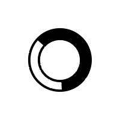

{{ displayStatus }}
Projects Map
Clustering
{{ clusterButtonText }}
County coloring
By project count
By avg project cost
Filter projects
Show only titled projects
Filter by partial title search
Filter by NG Programme
{{ngprog | displayOnlyAfterHyphen }}
Filter Projects
Clear Filters
